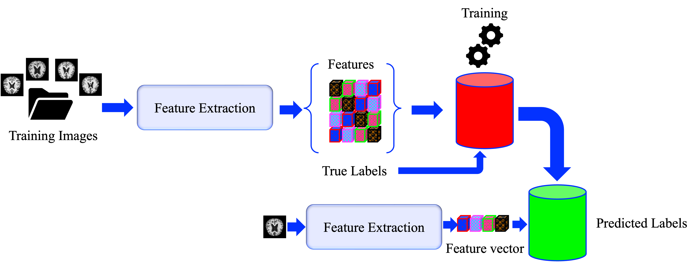

This project demonstrates an Alzheimer's disease classification system using Support Vector Machines (SVM) along with various feature extraction techniques including Histogram of Oriented Gradients (HOG), VGG16 features, and a hybrid approach combining both.
To set up the project environment to run the scripts, follow these steps:
pip install -r requirements.txtpython main.py --image_size 28 --technique hogpython main.py --image_size 224 --technique vggpython main.py --image_size 224 --technique hybrid